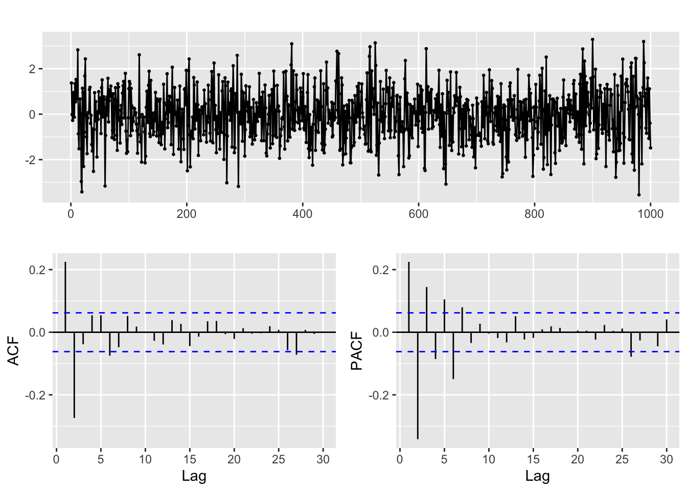
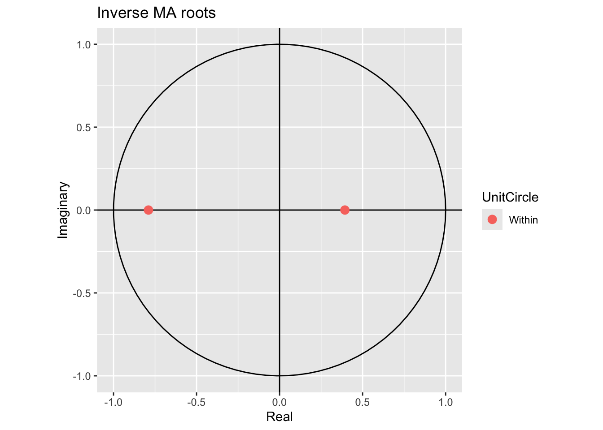
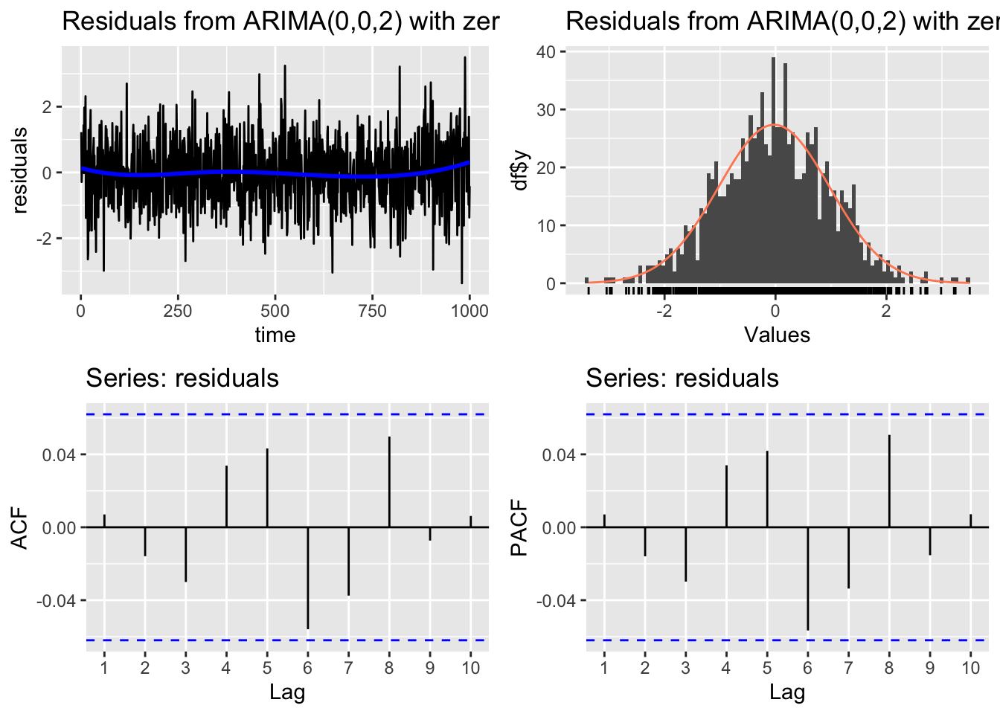
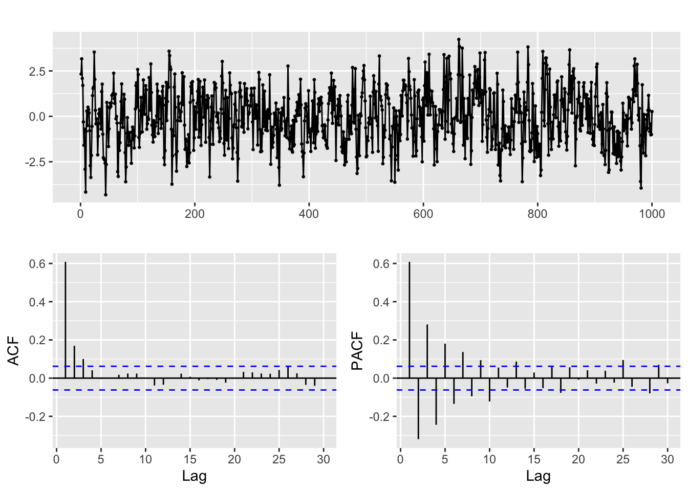

#####################################################################
########## Lab Practice 2: ARMA models ###########
#####################################################################2025_09_17 ARMA Processes, lecture notes
Preliminaries
Load the required libraries
library(MLTools)
library(fpp2)
library(tidyverse)
library(readxl)
library(lmtest) #contains coeftest functionSet working directory
setwd(dirname(rstudioapi::getActiveDocumentContext()$path))ARMA processes
Autoregressive (AR) Process Definition in the Non Seasonal (Regular) Case
A stochastic process \((Y_t)\) is called autoregressive if it satisfies the equation:
\[y_{t} = \phi_{1}y_{t-1} + \phi_{2}y_{t-2} + \dots + \phi_{p}y_{t-p} + \varepsilon_{t},\]
where:
- \(\varepsilon_{t}\) is gaussian white noise
- \(\phi_1, \ldots, \phi_{p}\) are constants, called the coefficients of the process.
- The number \(p\) is the order of the process, which is then called an \(AR(p)\) process.
Any time series which is a realization of an autoregressive process is called an autoregressive time series.
An autoregressive process can be considered as analogous to a multiple linear regression model. But here the prediction of \(y_t\) uses recent lags of the time series as input variables. We regress the time series onto its recent past, and that is why we call it autoregressive.
Backshift Operator and Characteristic Polynomial
Using the backshift operator \[B(y_t) = y_{t - 1}\]
we can write the autoregressive process as:
\[\Phi(B) y_t = (1-\phi_1B - \cdots - \phi_p B^p)y_{t} = \varepsilon_{t}\]
where
\[\Phi(B) = (1-\phi_1B - \cdots - \phi_p B^p)\] is the characteristic polynomial of the process.
Stationarity in AR Processes
Not all AR processes are stationary: as we have said, a random walk is an example of AR(1) process, but we know it is not stationary. An autoregressive AR(p) process is stationary if and only if the roots of the characteristic polynomial are outside the unit circle.
Generating a pure autoregressive AR(2) time series
We will generate a time series following this equation (using the characteristic polynomial formulation): \[(1 - (1/3)B - (1/2)B^2)y_{t} = \varepsilon_{t}\]
White noise as starting point. We begin creating a gaussian white noise time series. In order to do that we get a sample of n random values from a standard normal.
n <- 500
set.seed(42)
w <- ts(rnorm(n, mean = 0, sd = 1))
head(w, 25)Time Series:
Start = 1
End = 25
Frequency = 1
[1] 1.37095845 -0.56469817 0.36312841 0.63286260 0.40426832 -0.10612452
[7] 1.51152200 -0.09465904 2.01842371 -0.06271410 1.30486965 2.28664539
[13] -1.38886070 -0.27878877 -0.13332134 0.63595040 -0.28425292 -2.65645542
[19] -2.44046693 1.32011335 -0.30663859 -1.78130843 -0.17191736 1.21467470
[25] 1.89519346Now we can use a for loop to generate the autoregressive time series:
phi <- c(1/3, 1/2)
y <- rep(0, n)
y[1] <- w[1]
y[2] <- -phi[1] * y[1] + w[2]
for (t in 3:n){
y[t] <- phi[1] * y[t - 1] + phi[2] * y[t - 2] + w[t]
}
y <- ts(y)To see the first values:
autoplot(head(y, 100))And for the autocorrelation information
ggtsdisplay(y, lag.max = min(n/5, 50))The ACF and PACF of a pure AR(p) model
Given a time series generated by a pure AR(p) process, trying to identify the value of \(p\) in the ACF is not easy. The theoretical ACF of a pure autoregressive process decays exponentially. But the pattern of decay can be complex and besides we only have access to estimated values of the ACF.
That is the reason for the use of the PACF. Partial autocorrelation measures the correlation between lagged values in a time series when we remove the influence of correlated lagged values in between.
The (theoretical) PACF for a pure autoregressive process AR(p) equals 0 for lags greater than p. In practice that means that in the (estimated) PACF plots we expect the first p lags to be the only ones significantly different from 0.
Keep in mind however that the ACF and PACF should always be considered jointly to identify the structure of the process.
Check this in the PACF above.
Fitting an ARIMA model to this time series
Now suppose that you know that the series was generated by an AR(2) process, but you don’t know the coefficients \(\phi_1, \phi_2\).
The Arima function in the forecast library fits a model to the series, using the order p = 2:
# Line 32
# Fit model with estimated order
arima.fit <- Arima(y, order=c(2, 0, 0), include.mean = FALSE)We will discuss below the structure of this function call. The coefficients fitted for this model are ar1, ar2 in the output of the next code line:
summary(arima.fit) # summary of training errors and estimated coefficientsSeries: y
ARIMA(2,0,0) with zero mean
Coefficients:
ar1 ar2
0.3131 0.4806
s.e. 0.0392 0.0392
sigma^2 = 0.9486: log likelihood = -695.76
AIC=1397.52 AICc=1397.57 BIC=1410.16
Training set error measures:
ME RMSE MAE MPE MAPE MASE
Training set -0.04024805 0.9720046 0.7667771 844.0977 1238.059 0.7675081
ACF1
Training set -0.003799996And you can see they are not far from the real values.
Diagnose of the fit. Coefficients and residuals.
Statistical significance of the model coefficients and stationarity
The statistical theory behind the ARIMA model allows us to test if the coefficients of the fitted model are significantly different from zero (the null is the coefficient is 0)
We can do this with the coeftest function
# Line 37
coeftest(arima.fit) # statistical significance of estimated coefficients
z test of coefficients:
Estimate Std. Error z value Pr(>|z|)
ar1 0.313113 0.039218 7.9839 1.418e-15 ***
ar2 0.480567 0.039235 12.2486 < 2.2e-16 ***
---
Signif. codes: 0 '***' 0.001 '**' 0.01 '*' 0.05 '.' 0.1 ' ' 1The small p-values (in the column Pr(>|z|) and indicated by the asterisks) show that this is indeed the case.
Next we check for stationarity, looking at the inverse values of the roots of the characteristic polynomial.
# Line 39
autoplot(arima.fit) # root plotThe inverse values are inside the unit circle, so that is ok.
Residual diagnosis
The residuals of the model are defined as usual \[ e_t = \hat y_t - y_t \] If the ARIMA model is a good fit for the time series, these residuals should behave like gaussian white noise.
We can check that with these diagnosis plots:
# Line 41
# Check residuals
CheckResiduals.ICAI(arima.fit, bins = 100, lags = 20)
Ljung-Box test
data: Residuals from ARIMA(2,0,0) with zero mean
Q* = 11.897, df = 8, p-value = 0.1558
Model df: 2. Total lags used: 10The Ljung-Box hypothesis test uses the null hypothesis: the residuals are white noise. So if we get a low p-value that is a symptom of an unsatisfactory Arima fit.
Similar plots are obtained with
# Line 44
# If residuals are not white noise, change order of ARMA
ggtsdisplay(residuals(arima.fit), lag.max = 20)Graphic inspection of the fitted values
We can also examine the fitted vs original time series for a visual check of the model fit:
# Line 49
# Check fitted forecast
autoplot(y, series = "Real") +
forecast::autolayer(arima.fit$fitted, series = "Fitted")Moving Average (MA) Process Definition in the Non Seasonal (Regular) Case
Moving Average Processes
A stochastic process \((Y_t)\) is called a moving average process if it satisfies the equation:
\[y_{t} = \varepsilon_t + \theta_{1}\varepsilon_{t-1} + \theta_{2}\varepsilon_{t-2} + \cdots + \theta_{q}\varepsilon_{t-q},\]
where:
- \(\varepsilon_{t}\) is gaussian white noise
- \(\theta_1, \ldots, \theta_{q}\) are constants, called the coefficients of the process.
- The number \(q\) is the order of the process, which is then called an MA(q) process.
Any time series which is a realization of a moving average process is called an moving average time series.
Note: we said before that a pure autoregressive process resembles a multilinear regression of the series on its past values. But for pure MA processes this is no longer the case: we can not regress \(y_t\) on the past error terms \(\varepsilon_{t - k}\) because they are unobservable (the \(\theta_k\) are unknown until we fit a model).
Characteristic polynomial
The characteristic polynomial of the MA(q) process is: \[ \Theta(B) = 1 + \theta_{1}B + \theta_{2}B^2 + \cdots + \theta_{q}B^q \] and the MA process can be written as: \[ y_t = \Theta(B) \varepsilon_t \]
The document MA_examples deals with real world examples of these kind of processes.
Invertibility
An \(MA(q)\) process is invertible if it can be expressed as an autoregressive process \(\text{AR}(\infty)\): \[ (1 + \theta_1\, B + \theta_1^2\, B^2 + \theta_1^3\, B^2+\dots)y_t = \varepsilon_t \]
MA(q) processes are invertible if the roots of the characteristic polynomial \(\Theta(B)\) are all outside the unit circle of the complex plane. See the discussion and the video in Section 9.4 of Hyndman & Athanasopoulos (2021)
Generating a pure moving average MA(2) time series
Let us simulate a time series according to the MA(2) characteristic polynomial:
\[y_t = \epsilon_{t} + 0.4\,\epsilon_{t–1} - 0.3\,\epsilon_{t–2} = (1 + 0.4\,B - 0.3\, B^2)\,\epsilon_{t}\] This is analogous to what we did before for the autoregressive process, assuming that all values before t = 1 are equal to 0.
set.seed(42)
n <- 1000
w <- rnorm(n)
theta <- c(0.4, -0.3)
# theta <- c(0.4, 0)
y <- rep(0, n)
y[1] <- w[1]
y[2] <- w[2] + theta[1] * w[1]
for (t in 3:n){
y[t] <- w[t] + theta[1] * w[t - 1] + theta[2] * w[t - 2]
}
y <- ts(y)For the first values
autoplot(head(y, 100))And for the ACF and PACF
ggtsdisplay(y, lag.max = min(n/5, 30))
The ACF and PACF of a pure MA(q) model
For a time series generated by a pure MA(q) process, the situation is somehow the opposite of what we saw in the AR(p) case. The theoretical ACF becomes zero after q lags, while the PACF decays exponentially. Again the pattern of decay of the PACF can take different forms.
We emphasize again that for proper identification the ACF and PACF are to be considered jointly. For a pure MA(q) process we expect precisely the first q lags in the ACF to be significantly different from 0, while we observe a pattern of rapid decay in the PACF.
Fitting an ARIMA model to this time series
As in the case of the AR example, we can use the Arima function to fit a model to the series, using the order q = 2:
# Line 32
# Fit model with estimated order
arima.fit <- Arima(y, order=c(0, 0, 2), include.mean = FALSE)So you see that the order argument in these examples has the structure order=c(p, 0, q).
Diagnose of the fit.
We proceed as in the AR case.
Statistical significance of the model coefficients and stationarity
With the coeftest function. Note the names of the coefficients.
# Line 37
coeftest(arima.fit) # statistical significance of estimated coefficients
z test of coefficients:
Estimate Std. Error z value Pr(>|z|)
ma1 0.396233 0.030418 13.026 < 2.2e-16 ***
ma2 -0.310509 0.030461 -10.194 < 2.2e-16 ***
---
Signif. codes: 0 '***' 0.001 '**' 0.01 '*' 0.05 '.' 0.1 ' ' 1The small p-values again show that the coefficients can be safely assumed to be significantly different from 0.
Next we check for invertibility, looking at the inverse values of the roots of the characteristic polynomial.
# Line 39
autoplot(arima.fit) # root plot
They are inside the unit circle, meaning the model is invertible.
Residual diagnosis
Using these diagnosis plots:
# Line 41
# Check residuals
CheckResiduals.ICAI(arima.fit, bins = 100, lags = 20)
Ljung-Box test
data: Residuals from ARIMA(0,0,2) with zero mean
Q* = 11.411, df = 8, p-value = 0.1795
Model df: 2. Total lags used: 10The plots indicate that the residuals behave like gaussian white noise. The Ljung-Box test has a high p-value, so we do not reject the null hypothesis.
Graphic inspection of the fitted values
We plot the fitted values vs the original time series:
# Line 49
# Check fitted forecast
autoplot(y, series = "Real") +
forecast::autolayer(arima.fit$fitted, series = "Fitted")Definition of the ARMA(p, q) process
An stochastic process is an ARMA(p, q) process if it satisfies the equation \[ y_{t} = \phi_{1}y_{t-1} + \cdots + \phi_{p}y_{t-p} + \theta_{1}\varepsilon_{t-1} + \cdots + \theta_{q}\varepsilon_{t-q} + \varepsilon_{t} \] where, as usual, \(\varepsilon_{t}\) is white noise, and \((p, q)\) are jointly called the order of the process.
The expression of the ARMA(p, q) process in terms of characteristic polynomials is: \[ \Phi(B)\,y_t = \Theta(B)\varepsilon_t \] And the process is stationary and invertible if the roots of both \(\Phi(B)\) and \(\Theta(B)\) are outside the complex unit circle.
Generatig an ARMA(p, q) time series
# set.seed(42)
n <- 1000
w <- rnorm(n)
phi <- c(runif(1, -1, 1), 0)
theta <- c(runif(1, -1, 1), 0)
y <- rep(0, n)
y[1] <- w[1]
y[2] <- phi[1] * y[1] + w[2] + theta[1] * w[1]
for (t in 3:n){
y[t] <- phi[1] * y[t - 1] + phi[2] * y[t - 2] + w[t] + theta[1] * w[t - 1] + theta[2] * w[t - 2]
}
y <- ts(y)
autoplot(y)The ACF and PACF of an ARMA(p, q) model
Let us examine the ACF and PACF of the ARMA(p, q) time series that we have generated.
ggtsdisplay(y, lag.max = min(n/5, 30))
- As you can see the patterns in the ACF and PACF are harder to analyze, and they basically tell us that this is not a pure AR or MA process. But finding out the order can be complicated, and it is often a matter of trial and error, guided by the diagnosis tools that we have seen above.
- Our goal will be to reach a model with significant coefficients and residuals that look like white noise.
- One basic guideline is keep it simple! Sometimes you will feel tempted to start with a fairly complex model, say ARMA(2, 2), and then remove the non significant coefficients. This is not a good idea!
- Let us repeat once more: the ACF and PACF must be considered jointly. In particular, it is a mistake to think like: “you get p by looking at the PACF and q by looking at the ACF”.
Exercise
- Fit and diagnose an ARMA(p, q) model to the series we have generated.
- Open the
Lab_2_ARMA.Rfile for today session and try to identify the ARMA order (p, q) for the time series corresponding to each of the columns of theARMA_series.xlsdata file. - The fit of an ARMA(p,q) model assumes that the series is generated by an stationary process. In the next session we will address the obvious question: what can be done when the series can not be considered stationary.
ARMA Hackaton
Visit the Moodle section for this chapter.
Converting dates from last to first day of the month for EDA
This section solves one pending issue from previous sessions, describing an example of the kind of date/time manipulation that is often required when working with time series data.
We load the data in this example, from the file month_final_day.csv
fdata <- read.table("month_final_day.csv", header = TRUE, sep = ",")
head(fdata) date value
1 1982-01-31 -0.2729
2 1982-02-28 -1.7150
3 1982-03-31 -1.9920
4 1982-04-30 -1.2720
5 1982-05-31 0.3908
6 1982-06-30 -0.1222As you can see we have monthly data but the dates correspond to the last day of the month. That can be hard to deal with because of the irregularity in the length of the months. Therefore we convert it to first day of the month below. This conversion is purely for exploratoru purposes. If the precise day of data collection is relevant in any way, you need to be extra cautious when doing this.
First we need to acknowledge the format in the file, converting the column into a date object in R:
fdata$date <- as.Date(fdata$date, format = "%Y-%m-%d")
head(fdata) date value
1 1982-01-31 -0.2729
2 1982-02-28 -1.7150
3 1982-03-31 -1.9920
4 1982-04-30 -1.2720
5 1982-05-31 0.3908
6 1982-06-30 -0.1222Now we can use the format function to convert it back to character strings, but with the format of our choice. In the code below we choose to fix the day part of the date as 01. But you could try things like `format = “%Y %b” (try it!) to get different results.
fdata$date <- format(fdata$date, format = "%Y-%m-01")
# fdata$date <- format(fdata$date, format = "%Y %b")
head(fdata) date value
1 1982-01-01 -0.2729
2 1982-02-01 -1.7150
3 1982-03-01 -1.9920
4 1982-04-01 -1.2720
5 1982-05-01 0.3908
6 1982-06-01 -0.1222Note however that whatever the format you choose, we have fallen back to strings. So for the rest of the EDA we need to apply as.Date a second time:
fdata$date <- format(fdata$date, format = "%Y-%m-%d")
head(fdata) date value
1 1982-01-01 -0.2729
2 1982-02-01 -1.7150
3 1982-03-01 -1.9920
4 1982-04-01 -1.2720
5 1982-05-01 0.3908
6 1982-06-01 -0.1222References
Hyndman, R. J., & Athanasopoulos, G. (2021). Forecasting: Principles and practice. OTexts. Retrieved from https://otexts.com/fpp3/
Krispin, R. (2019). Hands-on time series analysis with r: Perform time series analysis and forecasting using r. Packt Publishing Ltd. Retrieved from https://github.com/PacktPublishing/Hands-On-Time-Series-Analysis-with-R